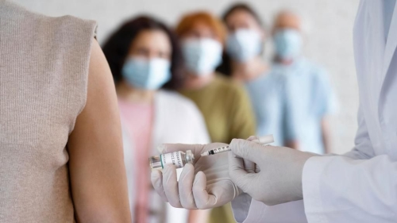
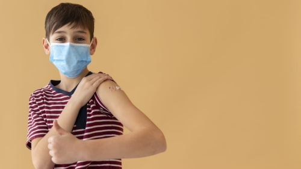

No início do segundo semestre desse ano, com a descoberta de cada vez mais variantes da Covid-19, inúmeros países ao redor do mundo optaram pela ampliação do processo de vacinação, com a distribuição da 3° dose ou dose de reforço. A medida gerou debate entre os especialistas, considerando que não há orientações específicas sobre a aplicação da dose de reforço. Além disso, na época, a Organização Mundial da Saúde (OMS) pediu que esses países com a vacinação mais avançada esperassem até que ao menos 10% da população mundial estivesse vacinada, a fim de evitar o uso de todo o suprimento global.
Ainda em julho, Israel foi o primeiro país do globo a oferecer a 3° dose a sua população, inicialmente apenas para pessoas com algum tipo de imunodeficiência. Logo, nações como Rússia, Hungria e República Dominicana já haviam começado com o processo de reforço na imunização. No Brasil, a aplicação da dose extra iniciou-se na segunda quinzena de setembro, inicialmente direcionada a idosos acima de 60 anos.

Atualmente, o Brasil tem expandido a vacinação com a dose adicional das vacinas da Pfizer, AstraZeneca ou Janssen para todos os cidadãos maiores de 18 anos, no entanto a recomendação pode variar de estado para estado de acordo com a situação epidemiológica e de vacinas.
Até o momento, o reforço acontecia após seis meses e só era indicado para indivíduos com mais de 60 anos, profissionais da saúde e imunodeprimidos (pessoas com problemas no sistema imunológico).
No Brasil a dose de reforço deve ser administrada com um intervalo mínimo de 5 meses após completar o esquema vacinal inicial.
O plano de vacinação e a indicação da vacina podem variar em alguns estados e, por isso, é importante estar atento às recomendações locais.

As informações sobre os riscos de uma nova dose da vacina contra a COVID-19 ainda são limitadas. No entanto, as reações à dose de reforço de mRNA ou adenovírus, que são a Pfizer e AstraZeneca respectivamente, são semelhantes às duas doses anteriores, sendo esperado que ocorram sintomas leves a moderados como cansaço excessivo ou dor no local da injeção.
Além das pessoas que vão tomar a 3ª dose, as crianças também começaram a ser vacinadas ao redor do globo com a 1ª dose. Os Estados Unidos já aprovaram o uso da Pfizer em crianças de 5-11 anos. Outros países também já aprovaram o uso da vacina. Estes são: Bahrein, Chile, China, Cuba, El Salvador, Emirados Árabes Unidos, Equador e Indonésia.
Para tal vacinação ocorrer no Brasil, precisa-se da autorização do pedido para a mesma, que é concedido pela Anvisa. O Butantan já fez o pedido para o uso da CoronaVac em crianças e adolescentes de 3-17 anos, mas o pedido foi recusado, pois, de acordo com a Anvisa, “Os dados de imunogenicidade deixam incertezas sobre a duração da proteção conferida pelo imunizante”, ou seja, não foi possível definir a eficácia da vacina com os estudos apresentados pelo instituto.
A vacinação infantil é necessária, pois cerca de 2400 crianças e adolescentes já morreram por conta do vírus, e cerca de 60% não tinha nenhum fator que aumentasse o risco da infecção grave. Os pais precisam se conscientizar sobre isso e ficarem atentos para quando as suas crianças irão poder se vacinar.
Infelizmente,ainda existem pessoas que não querem se vacinar. Os dados mostram que os adolescentes e jovens entre 18 e 24 anos representam 34% das pessoas que não querem se vacinar e adultos de 25 a 34 anos representam 42%. Existem diversas razões para isso, entre elas: medo de efeitos colaterais, inseguranças em relação ao tempo da produção das vacinas ou até por influência de pessoas próximas ou influenciadores.
É preciso informar e conscientizar as pessoas sobre as vacinas, para que elas entendam que não há malefícios e que se vacinar contra a COVID-19 é muito importante e necessário, de acordo com o médico Dráuzio Varella “pela primeira vez, vamos contar com uma arma para impedir que as pessoas fiquem doentes e acabem nas UTIs de hospitais super lotados, como acontece em Manaus e em outras cidades.”